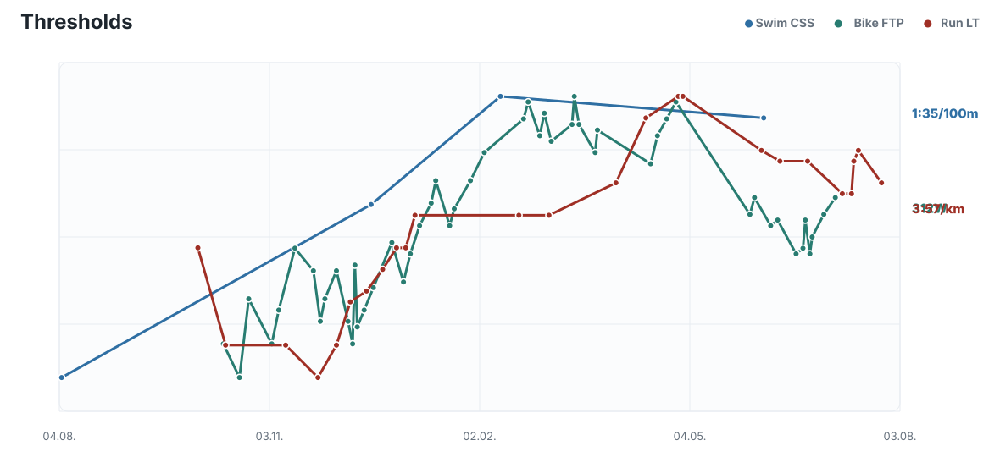
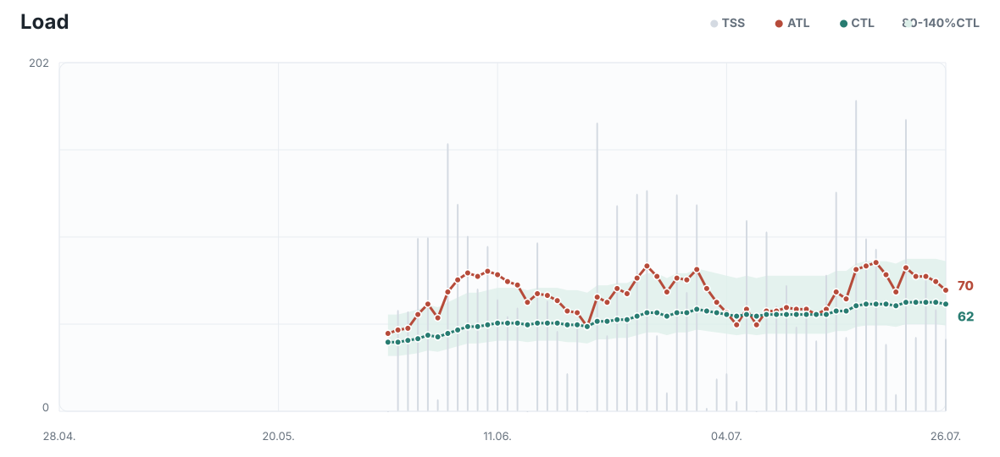
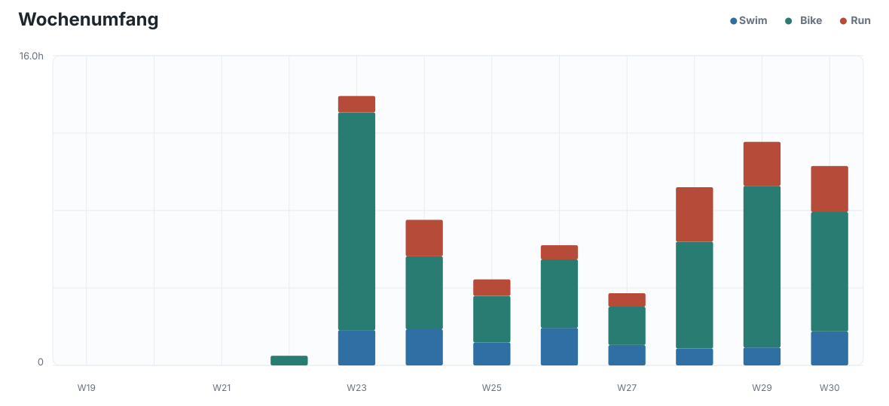
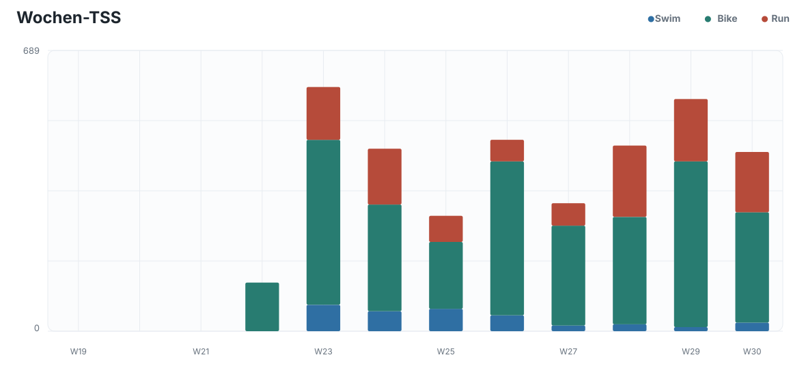
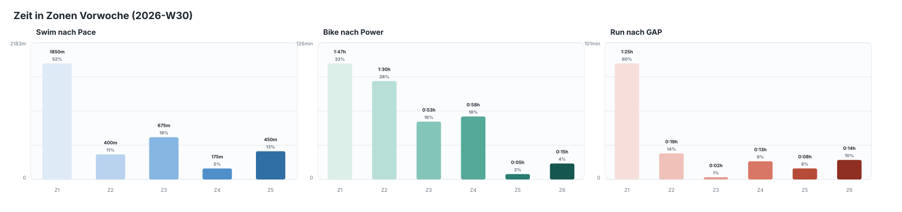
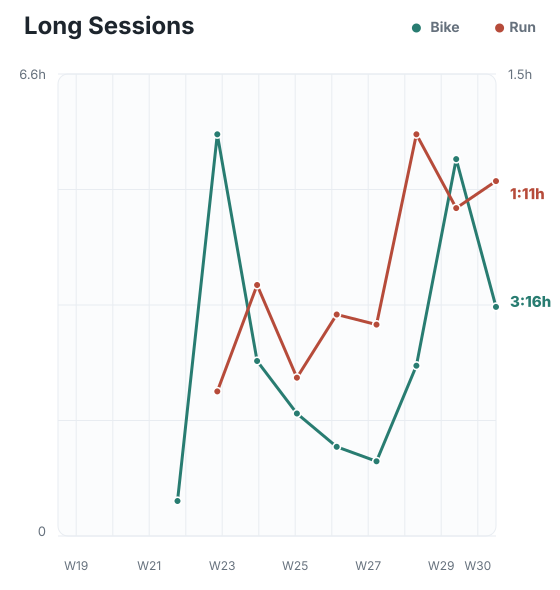
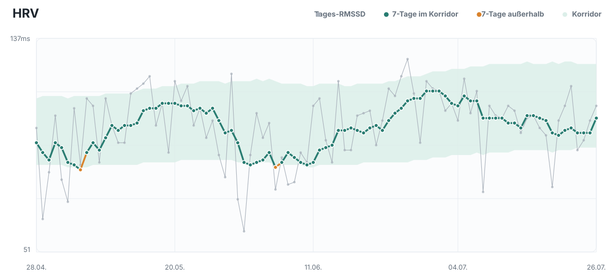
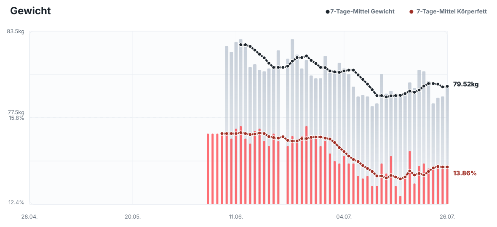
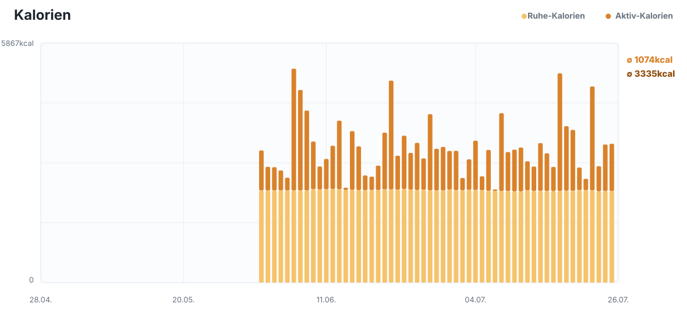

Mo 2026-07-27
Basic
40min @4:55/km
Schwimmprogramm
Nach externem Schwimmprogramm
2026-07-27 bis 2026-08-02
40min @4:55/km
Nach externem Schwimmprogramm
1:15h @4:45/km
Nach externem Schwimmprogramm
75min @205W
W30 wurde mit rund 10:19h und 453 TSS deutlich belastender als eine echte Entlastungswoche. Enthalten waren etwa 1:45h Schwimmen, 6:11h Radfahren und 2:23h Laufen. Der Basic Run am Montag blieb mit 4:53/km GAP bei 120bpm kontrolliert, der Long Run am Freitag war mit demselben GAP, 121bpm und 1,9% HR-Drift aerob sehr stabil, wurde aber mit 1:10h etwas kürzer als geplant beendet. Das Long Bike am Mittwoch setzte mit 3:16h und 169 TSS den größten Reiz, war bei 211W im Schnitt und 3,3% HR-Drift kontrolliert, auf dem hügeligen Profil aber nicht rein locker. Das Threshold Bike am Donnerstag wurde mit 3x10min bei 303 bis 304W stabil absolviert. Der Threshold Run am Sonntag wurde ohne erkennbaren Einbruch gelaufen, die Arbeitsabschnitte lagen GAP-basiert überwiegend etwa bei 3:36 bis 3:51/km und damit bereits über dem Soll von 3:55/km.
Die zwei Schwimmeinheiten umfassten zusammen 3.550m, waren aber mit überwiegend Z1-Anteilen klar aerob und technisch geprägt. Wegen der wiederholten Krämpfe und der Abweichung zwischen CSS und Freiwasserleistung bleibt eine kurze, saubere Wiederholungssteuerung sinnvoller als das Erzwingen der CSS-Pace. Die Health-Werte am 2026-07-26 sind unauffällig: Tages-HRV 110ms und 7-Tage-HRV 105ms liegen im 90-Tage-Korridor von 93 bis 127ms, Ruhepuls 37bpm sowie 7:41h Schlaf bei Score 94 sprechen nicht für akute Erschöpfung. Das 7-Tage-Gewichtsmittel liegt bei 79,52kg und damit etwa im stabilen Bereich der letzten zwei Wochen, die BIA-Schwankungen sind nicht als kurzfristige Körperkompositionsänderung zu deuten. Die Alltagsbelastung ist mit 5.310 Schritten im 7-Tage-Mittel moderat. Der Load-Status bleibt dennoch erhöht: ATL 70, CTL 62, TSB -8 und ACR 1,127 nach dem Sonntagstraining sprechen für eine strukturierte, aber nicht aggressiv gesteigerte Folgewoche.
Für W31 folgt auf ausdrücklichen Athletenwunsch ein härterer Aufbau mit allen Standard-Einheiten. Der Montag kombiniert Basic Run und die erste Swim-Session, bevor am Dienstag ein kurzer Schwellenlauf folgt. Das Long Bike wächst am Mittwoch auf 3:30h bei 205W. Der Long Run liegt am Donnerstag bei maximal 1:15h und 4:45/km, weil die Begrenzung des mechanischen Laufumfangs zur Verletzungsprophylaxe sinnvoll ist. Er folgt damit direkt auf das Long Bike, was wegen der festgelegten beiden Schwimmtage und des Basic Bikes am Samstag die sinnvollste Platzierung ist, aber bei schweren Beinen auf 60min verkürzt werden soll. Das Threshold Bike am Freitag setzt mit 3x15min bei 305W einen längeren spezifischen Reiz. Beim Lauf war die tatsächliche Arbeitsgeschwindigkeit zuletzt bereits klar schneller als die Vorgabe, daher wird die Qualität über mehr kontrollierte Schwellenzeit statt über eine noch höhere Pace gesteigert. Zwei Schwimmeinheiten liegen am Montag und Donnerstag, ihr Umfang und Inhalt folgen dem externen Schwimmprogramm. Das Basic Bike am Samstag bleibt bewusst locker und erhöht die Radfrequenz ohne einen zweiten langen Reiz. Diese Struktur hebt die Belastung gegenüber W30 über die Bike-Qualität, die vollständige Wochenstruktur und das längere Long Bike an, erhält die kurzfristige Form für Thiersee am 2026-08-16 und behält gleichzeitig den langfristigen Ironman-Aufbau als Hauptziel bei.











